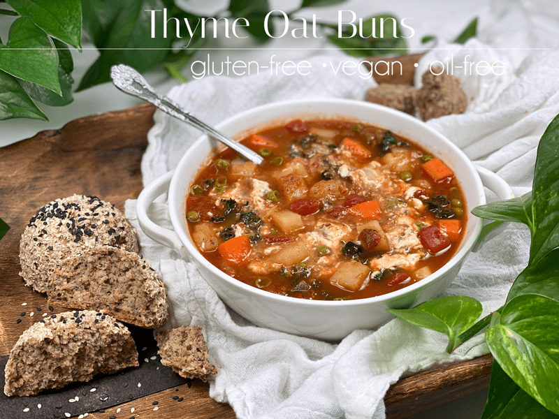
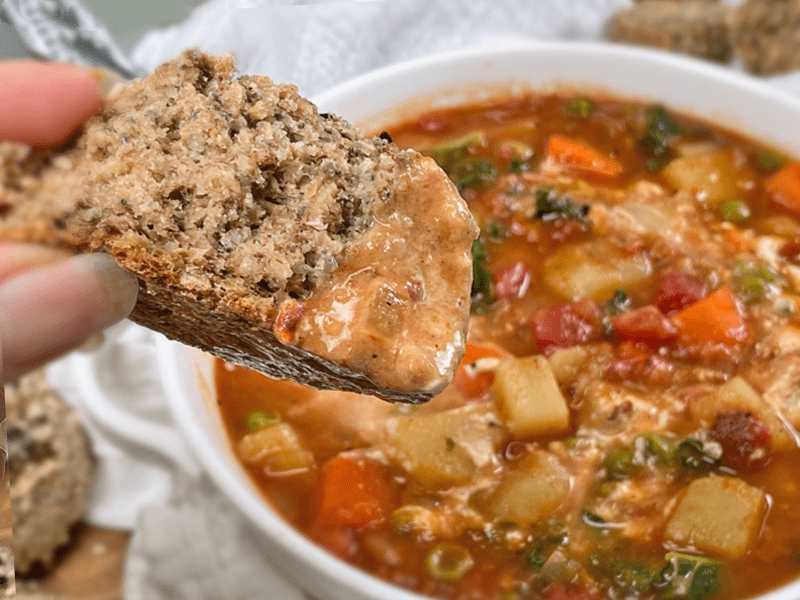
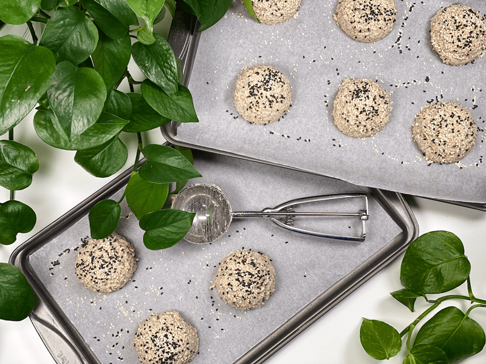
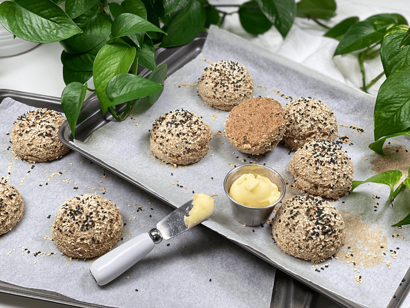

Thyme Oat Buns | Gluten-Free | Vegan | Nut-Free | Oil-Free
Time out, folks… today I am sharing with you my Thyme Oat Bun recipe — did you catch that play on words? These gluten-free, vegan, oil-free, yeast-free buns are hearty, full of soft, chewy texture, and have a delicious neutral flavor that pairs perfectly with anything.

This is pretty much the same recipe that I created for my Buckwheat and Oat Bread, with a tiny tweak or two. I decided to create a new post for it just in case you were scanning through the bread recipes specifically looking for a BUN recipe. I just LOVE versatile recipes, don’t you?! It makes creating a weekly meal schedule that much more fun and interesting.
Want to hear something funny? Come closer so Bob doesn’t hear me… I can take the same recipe and use it in different ways and Bob never catches on. He thinks it’s a new recipe and falls in love over and over again. Shh. This is between you and me! So for instance, I can take my bread loaf recipe and make bread, buns, focaccia, and a pizza crust, and he never realizes it’s the same ingredients (just shaped differently.) I am a sneaky one.

As you may have already figured out, I like to take up-close-and-personal photos of my food. It’s the best way, other than my words, that I can get the texture to come through via the internet. Here, we ended up enjoying the buns with my Roasted Tomato Vegetable Soup. I LOVE LOVE LOVE to dunk my bread in soup; however, Bob doesn’t. How about you? Are you a bread dunker?
This recipe creates nine good-sized buns. I used half a cup of batter per bun, which was the perfect size. Don’t make them too big, and the only reason I say that is because they are filling, since they are loaded with fiber! Good ol’ wholesome gut-loving fiber. So if you ever find yourself wanting soup or salad for lunch but it doesn’t sound filling enough, add one of the buns to the meal and it will help round things out. I hope you enjoy this quick and delicious recipe. blessings, amie sue
 Ingredients
Ingredients
Yields 9 (1/2 cup batter) buns
- 1 cup raw whole buckwheat kernels, soaked
- 1 1/2 cups gluten-free rolled oats
- 1/4 cup chia seeds
- 1/4 cup whole psyllium husks (not powder)
- 1/4 cup unsweetened applesauce
- 1 1/2 cups water
- 1 tsp thyme
- 1 tsp sea salt
- 1 tsp aluminum-free baking powder
- 1/2 tsp baking soda
- Topping – black and white sesame seeds
Preparation
Soaking the Buckwheat
- Place the buckwheat in a glass or stainless steel bowl, and cover with double the amount of water.
- Add 2 Tbsp raw apple cider vinegar, stir, and cover with a clean dishtowel.
- Let it sit on the counter for 30 minutes to 4 hours.
- Once ready to use, drain and rinse before adding to the food processor.
Mixing and Baking
- Preheat oven to 350 degrees (F) and line the baking pan with parchment paper.
- Add the rolled oats, chia seeds, psyllium husks (not powder), applesauce, water, thyme, baking powder, baking soda, and salt to the food processor (along with the buckwheat). Process for a full 30-60 seconds. DO NOT overprocess or the buns will come out dense and heavy.
- Scoop out some batter onto the parchment paper-lined baking sheet.
- I used a 1/2 cup ice cream/cookie scoop, making sure to level it off.
- I sprinkled black and white sesame seeds on top (totally optional).
- Bake for roughly 13 minutes until lightly brown.
- Immediately transfer the rolls to the cooling rack so the bottoms don’t get soggy.
Storage
- Once cooled, you can store in an airtight container on the counter for a few days, or in the fridge for around 5 days.
- They also freeze fantastically well and thaw beautifully. Make sure they are in an airtight container, and they should last up to 3 months.
-

-
Ready for the oven…
-

-
As you can see, the buns don’t brown a lot while baking. The bottoms do, so you can always check the bottoms to see how they are coming along.
© AmieSue.com